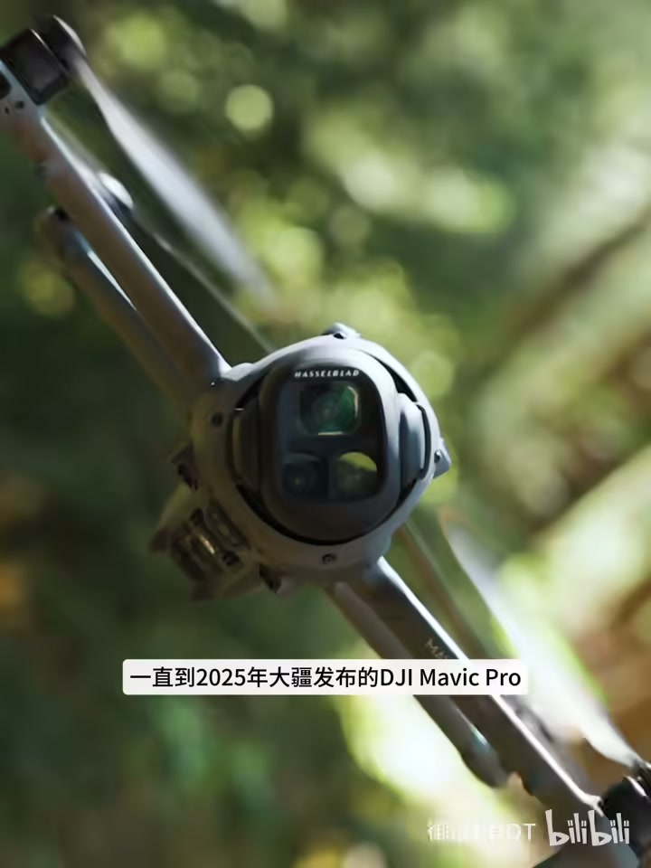
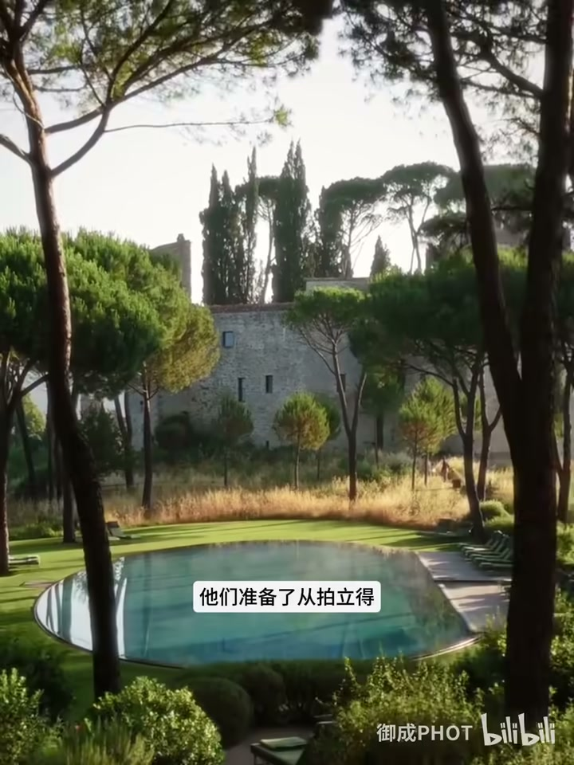
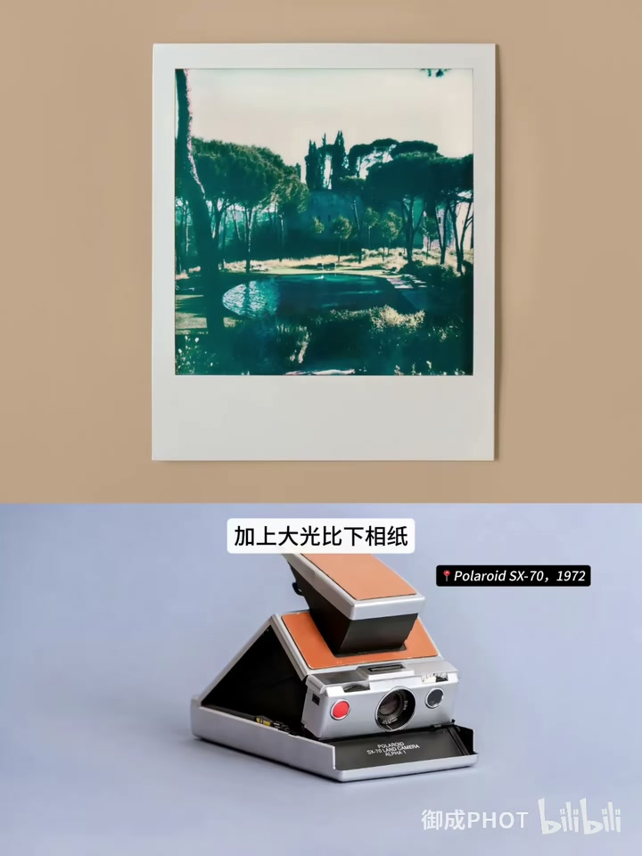
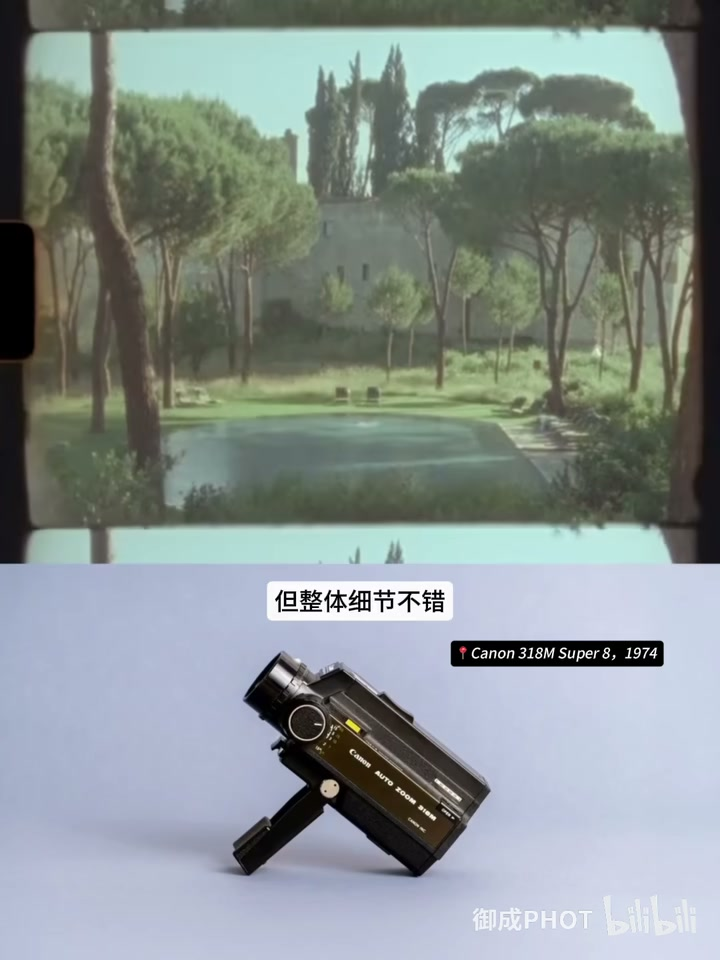
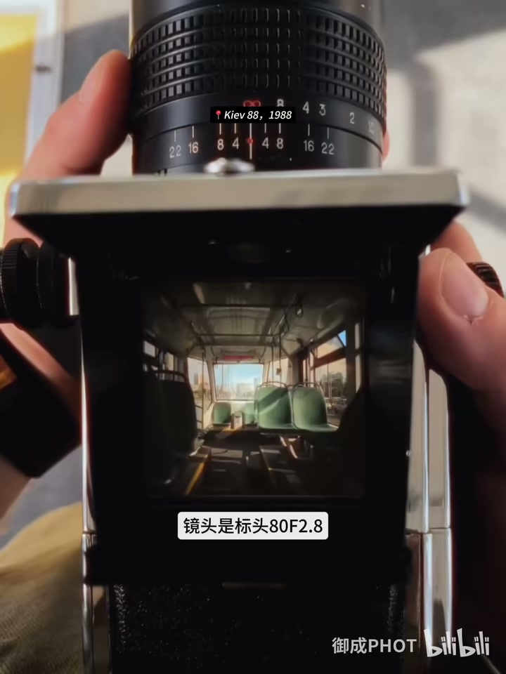
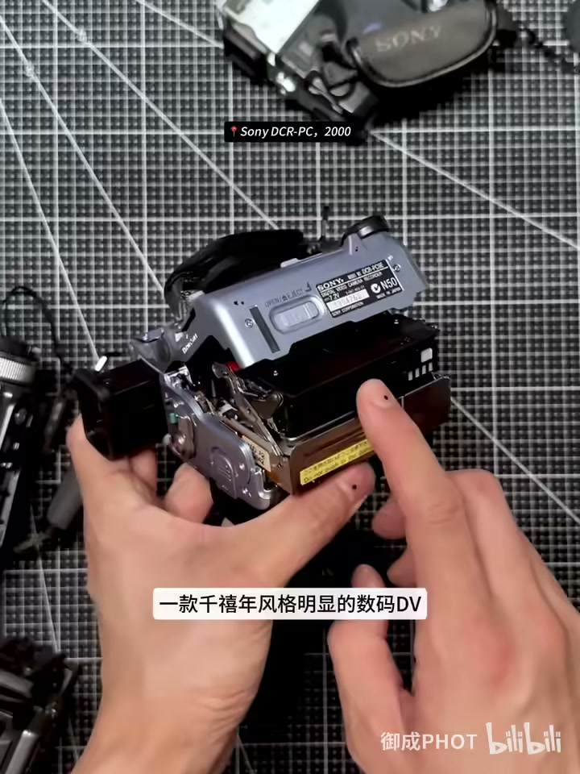
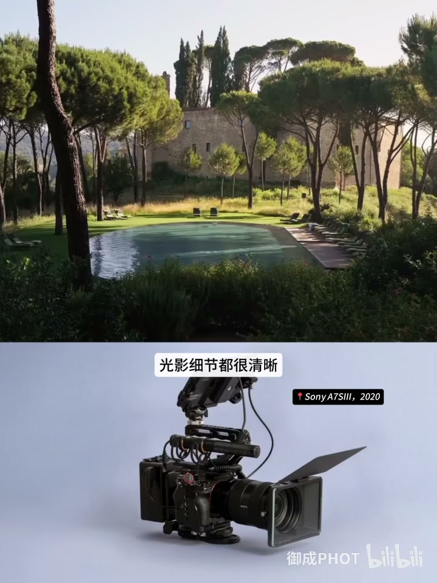
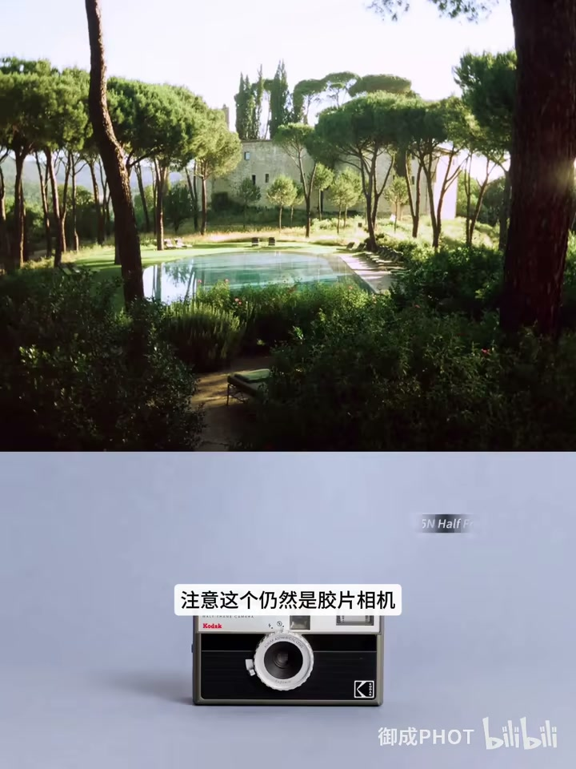
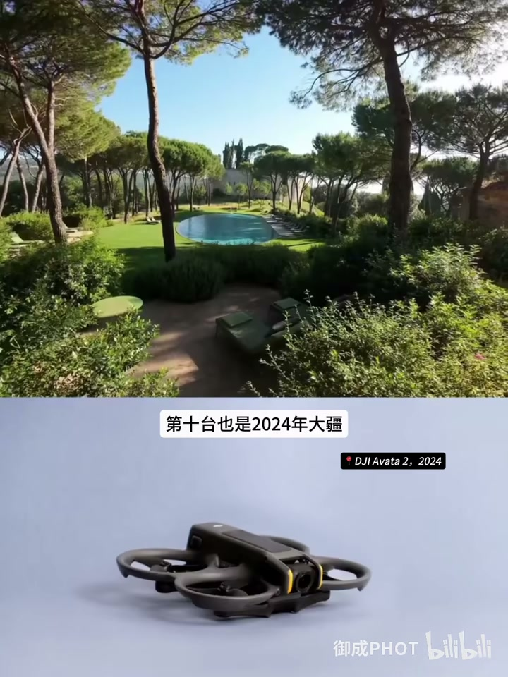
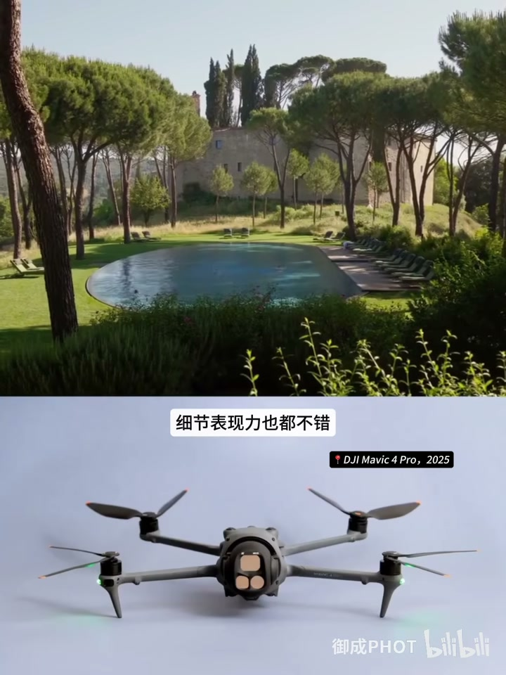

内容要点
B 站「御成PHOT」约 2 分 45 秒整理 Inns 博主 Dele Sign 在意大利翁布里亚庄园的同场景测试：跨约 53 年 11 款设备。按发布时间串讲成像差异。ASR 校正：「Inns→Inss/博主名保留」「育成君→御成君」「大光笔→大光圈」「康泰石→康泰时」「炮塔→Portra」「镖头→蔡司 Biogon/镜头口误作镖头」「HM4→偏 FX3/专业机口误」「科达→柯达」「Morrix→Matrix/Mavic 系列口误」「D-Log灰度→D-Log」等。
知识结构
SX-70→Super8→康泰时→基辅88：从轮廓到中画幅细节。
miniDV 断层 → A7S3 清晰 → RAW 宽容度巅峰。
半格胶片回潮、Action 超广、无人机 Log。
半世纪主线是「麻烦→简单、勉强留影→细节拉满」；喜好仍可按胶片味/纪实/航拍各取所需。
00:00–01:20胶片四部曲
同场景从 SX-70 的轮廓级拍立得到 Super 8 的光影过渡，再到康泰时蔡司色彩与基辅 88 中画幅的细节优势（老镜头脏点炫光仍在）。





01:20–02:45数码与当代
miniDV 的红绿断层很有年代感；A7S III 起同场景才「看得清」；专业机 RAW 调色宽容度最高。之后柯达半格胶片回潮、Action 超广平均曝光、Avata/Matrix 无人机收束进化叙事。





完整转录
从1972年发布的宝丽莱SX-70
一直到2025年大疆发布的DJI Mavic Pro
用跨度53年超过半个世纪的11款摄影产品拍摄同一个画面
它们之间的成像差别会是怎样的
Inns博主Dele Sign在意大利翁布里亚的一座庄园酒店里
完成了这个颇有意义的测试
他们准备了从拍立得到Super 8胶片摄像机
从索尼微单HM4到大疆无人机的11款设备
那育成君也按照这些设备发布的时间
为大家整理了它们的画面
首先出厂的是宝丽莱在1972年发布的SX-70
一款非常经典的折叠宝丽莱
果然典型的拍立得风格
毕竟半个世纪前的设备
镜头老化加上大光笔下
相纸显影液的效果有限
只能看出建筑和树木的轮廓
天空基本上细节都没有了
第二款是1974年发布的佳能318M Super 8胶片摄影机
使用的胶卷是科达的Vision 3 500T
虽然也是51年前的设备
但整体细节不错
能看到天空和水面的光影过渡
第三款是1986年发布的康泰石167MT胶片单反
使用的胶卷是135的炮塔800
蔡斯普拉纳50-1.4镜头的色彩特点非常的明显
第四款是1988年发布的中画幅胶片相机
前苏联时代乌克兰仿制哈苏相机的KV88
镜头是镖头80 F2.8
胶卷则是经典的炮塔400
中画幅色彩和相场的优势一下子就体现出来了
除了镜头因为时间的痕迹有点微脏
炫光明显之外
各项细节都非常的漂亮
第五台相机我们就告别胶片进入了数码领域
索尼在新千年发布的DCR-PC DVC-60ME
一款千禧年风格明显的数码DV
它使用的储存介质是mini DV磁带
画面中那个红绿色彩的断层就很有灵性
第六台是2020年索尼发布的专业视频机A7S3
终于能看清楚整体画面是什么了
不得不说科技改变生活
天空和树木水面的光影细节都很清晰
这波是索尼的技术大胜利
那第七台是索尼的HM4
这个画面是RAW格式进行后期调色后留下来的
宽容度和细节都是整个系列里最高的
第八台是2023年的科达H35N half
注意这个仍然是胶片相机
整体画面质感出乎意料的还不错
这个胶片的味还是对的
第九台是2024年大疆发布的Osmo Action 5 Pro
运动相机超广角一下子让画面变得开阔了
对高光和阴影的平均曝光算法很鲜明
第十台也是2024年大疆发布的AVATA二代无人机
郁成君无比怀念那个随便能起飞的年代
色彩效果就算还能看
最后第十一台出场的是二五年大疆发布的Morrix Pro
使用了大疆自家的D-Log灰度格式进行后期调色
细节表现力也都不错
那这半个世纪过去
能看到摄影技术从麻烦到简单
从勉强留个影到细节出魔鬼的进化
屏幕前的你最喜欢哪一台相机拍摄出来的效果呢